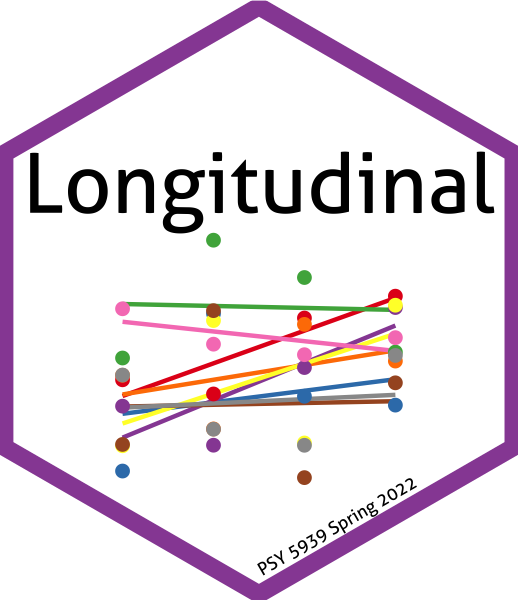

| Week | Topic | HTML slides | PDF handout |
|---|---|---|---|
| 1 | Introduction | Long2022-1.html | Long2022-1.pdf |
| 2 | Models for two waves | Long2022-2.html | Long2022-2.pdf |
| 3 | Mixed models (G) | Long2022-3.html | Long2022-3.pdf |
| 4 | Mixed models (G) | Long2022-4.html | Long2022-4.pdf |
| 5 | Mixed models (G) | Long2022-5.html | Long2022-5.pdf |
| 6 | Mplus | Long2022-6.html | Long2022-6.pdf |
| 7 | Latent growth models | Long2022-7.html | Long2022-7.pdf |
| 8 | Latent growth models | Long2022-8.html | Long2022-8.pdf |
| 9 | Latent growth models | Long2022-9.html | Long2022-9.pdf |
| 10 | Mediation | Long2022-10.html | Long2022-10.pdf |
| 11 | Mediation | Long2022-11.html | Long2022-11.pdf |
| 12 | Growth mixture models | Long2022-12.html | Long2022-12.pdf |
| 13 | Mixed models (R) | Long2022-13.html | Long2022-13.pdf |